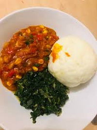
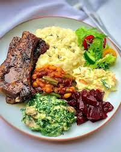
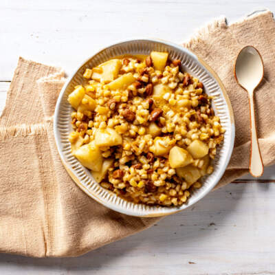
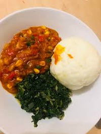

Chakalaka with Less Oil
A spicy vegetable relish that pairs well with pap — reduce oil and add more carrots and peppers for a healthier version.
Staples like pap, samp, beans, and leafy greens can form the basis of a balanced diet.
 A spicy vegetable relish that pairs well with pap — reduce oil and add more carrots and peppers for a healthier version.
